Conversation 734
Ecological Variations Of Genus
Prompt 1 · You
ecological variations of genus in the amsterdam area
Response 1 · Google AI Mode
The Amsterdam area features a complex gradient of urban, peatland, wetland, and coastal dune ecosystems. These diverse habitats drive distinct ecological variations within key biological genera. Organisms adapt structural, nutritional, and reproductive traits across these varied environments.
Cambridge University Press & Assessment +2
Tree Genera: Canopy Adaptation to Urban vs. Forested Stressors
The distribution and health of tree genera vary significantly between Amsterdam’s heavily urbanized canal rings and large peripheral green lungs like the Amsterdamse Bos.  Amsterdamse Bos +1
Amsterdamse Bos +1
Amsterdamse Bos +1- Genus Ulmus (Elms): Representing the largest single tree demographic in the city with over 75,000 trees, the Ulmus genus is culturally and physically hardwired into the urban fabric. In the dense urban center, cultivars are specifically bred and managed for high resistance to Dutch Elm Disease and the structural constraints of growing along historic quaysides. Gemeente Amsterdam
- Genus Quercus (Oaks): In the Amsterdamse Bos and peripheral landscape parks, native English Oaks (Quercus robur) form a massive canopy component supporting hundreds of insect and bird species. In contrast, urban core plantings frequently leverage non-native variations like the Moss Oak (Quercus cerris) to withstand soil compaction and higher microclimatic heat. Amsterdamse Bos +3
Epiphytic Lichen Genera: Bark Microclimates & Trophic Shifts
Research published in The Lichenologist highlights how urban environmental drivers—specifically the Urban Heat Island (UHI) effect, bark desiccation, and ammonia/nitrogen dioxide (NO₂) eutrophication—dictate the variation of lichen genera across Amsterdam’s lane trees.
Cambridge University Press & Assessment
- Xerophytic & Nitrophytic Genera (Xanthoria, Physcia): High ammonia and heavy urban vehicular emissions favor nutrient-loving (nitrophytic) and drought-resistant (xerophytic) genera. These genera dominate trees situated in high-traffic urban zones.
- Acidophytic Genera: Traditionally reliant on acidic, unpolluted environments, these genera have experienced a severe decline or total exclusion within the urban core, surviving primarily in rural peatlands and peripheral damp woodlands like the Twiske and Ilperveld. Cambridge University Press & Assessment +1
- Substrate Preference: Lichen diversity varies by tree substrate. Genera display a strong preference for trees with coarse bark textures and high water-holding capacities, while virtually avoiding smooth, bark-shedding genera like Platanus (Plane trees). Naturalis Institutional Repository +1
Wetland & Peatland Genera: Hydrological Gradients
The North of Amsterdam (Landelijk Noord) transitions into open peat-meadow landscapes and brackish water vectors near the IJ. Gemeente Amsterdam
Gemeente Amsterdam- Genus Carex (Sedges): As the most variegated plant genus in the Netherlands, Carex communities display strict zoning. In Amsterdam's fen-meadow networks, species alternate sharply based on microchemical fluctuations in water table depth, peat composition, and soil calcium levels.
 Natuurtijdschriften +1
Natuurtijdschriften +1 - Aquatic and Avian Genera: In marshy shorelines (Oeverlanden), wetland plant genera coexist with dense reedbeds that support specialized bird genera like Acrocephalus (reed warblers). Urban canal vectors see shifts where waterfowl genera, such as Fulica (coots), alter their nesting behaviors by building platforms out of urban plastic debris. Amsterdamse Bos +1
If you would like to look closer into a particular group, tell me if you are more interested in botanical flora, avian wildlife, or microorganisms like diatoms and lichens.
Plant Ecology and Evolution +2
Source links preserved from this response
- Cambridge University Press & Assessment
https://www.cambridge.org/core/journals/lichenologist/article/an-epiphyte-desert-no-more-considerable-epiphytic-lichen-diversity-on-common-lane-tree-species-in-amsterdam-under-contemporary-urban-environmental-conditions/0F40A84A15A814D9D4302F5C40BD9FE2 - Amsterdamse Bos
https://www.amsterdamsebos.nl/natuur/ - Gemeente Amsterdam
https://www.amsterdam.nl/stadsarchief/canon/windows/49/ - Amsterdamse Bos
https://www.amsterdamsebos.nl/natuur/natuur-amsterdamse/ - Ilperveld
https://www.iamsterdam.com/en/explore/area/nature-and-wellness/highlights - Naturalis Institutional Repository
https://repository.naturalis.nl/pub/801449 - Gemeente Amsterdam
https://assets.amsterdam.nl/publish/pages/1035689/230731_ecologische_kaart_amsterdam_noord_wcag.pdf - Natuurtijdschriften
https://natuurtijdschriften.nl/pub/540327/ABN1980029005004.pdf - Amsterdamse Bos
https://www.amsterdamsebos.nl/english/nature/ - Plant Ecology and Evolution
https://plecevo.eu/article/24526/download/pdf/655783
Prompt 2 · You
all of it even insects
Response 2 · Google AI Mode
The ecological variations across the Amsterdam area extend to all biological layers—from urban-integrated insects and specialized birds to microscopic water indicators. The city's landscape shapes distinct genetic, behavioral, and structural adaptations within these groups.
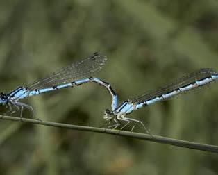
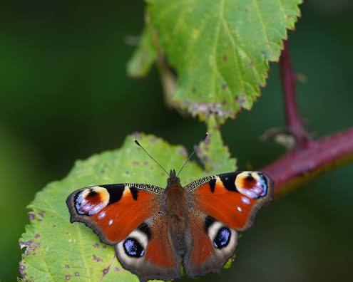
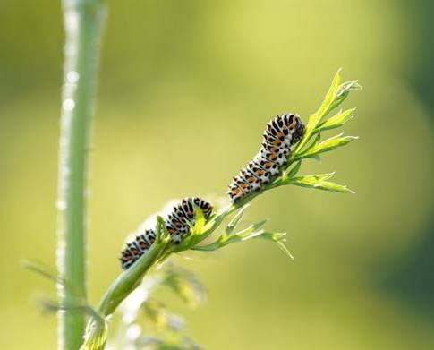
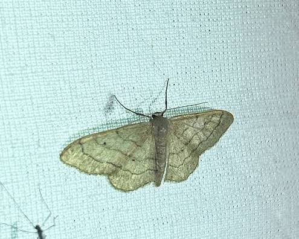
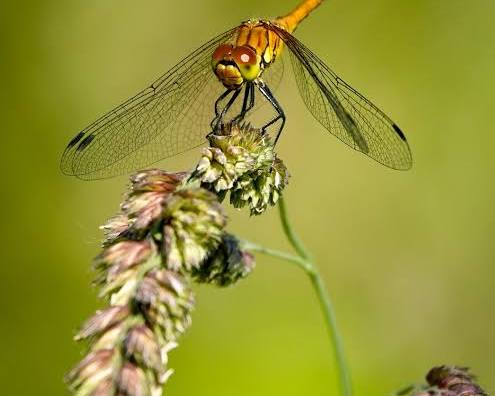
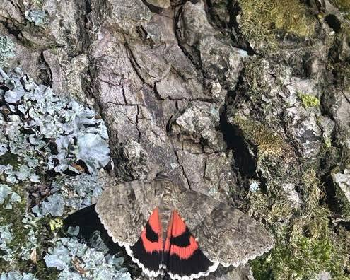
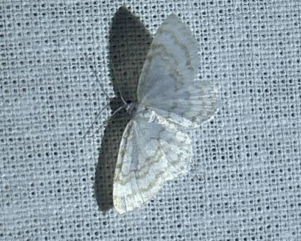
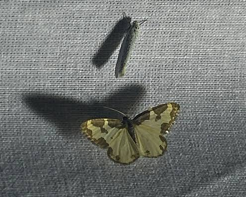
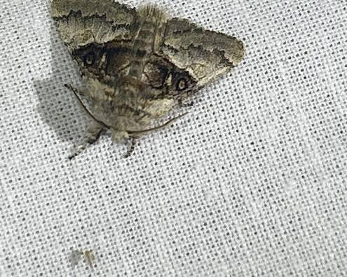
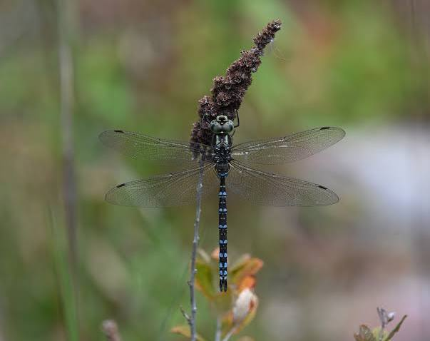
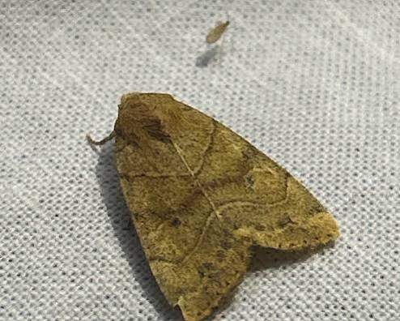
Insect Genera: Micro-Habitat Specialization and Urban Filtering
Amsterdam relies heavily on autonomous Diopsis AI monitoring cameras and projects like the AMS Institute's B++ initiative to study rapid shifts in insect demographics across urban and rural zones.
openresearch.amsterdam +1
- Genus Bombus (Bumblebees): In highly paved zones like Amsterdam-Centrum or Oost, Bombus populations rely almost entirely on deliberately planted green corridors, roof gardens, and historic pocket parks. Urban warming shifts their active season earlier in the spring compared to populations in peripheral zones like the Amsterdamse Bos, where they depend on naturally occurring spring geophytes. Amsterdamse Bos +2
- Genus Sympetrum & Libellula (Dragonflies): These genera exhibit intense variation between the highly managed city canals and the slow-moving, peat-rich waters of the Naardermeer or Ilperveld. In rural wetlands, they maintain complex larval lifecycles dependent on pristine water chemistry. In the urban canal network, their presence tracks the success of floating artificial reedbeds deployed to restore aquatic biodiversity. Amsterdamse Bos +2
- Wood-Boring Beetles (Lucanus and related saproxylic genera): These insects are heavily filtered out of highly manicured municipal parks due to the historical removal of fallen logs. However, they thrive in the dedicated "rewilding" zones of the Amsterdamse Bos, where forestry management intentionally leaves dead wood to rot in place, providing crucial overwintering habitats. Amsterdamse Bos +1
Avian Wildlife: Behavioral Integration vs. Wetland Dependence
The structural variations of the landscape separate birds into highly adapted urban exploiters and sensitive rural specialist genera.
- Genus Acrocephalus (Marsh & Reed Warblers): A strict seasonal migrant genus completely restricted to peripheral wetlands like the Amstelveense Poel or Het Twiske. They show zero tolerance for urban environments, relying purely on vast, undisturbed reedbeds for nesting and tracking specific seasonal insect hatches. Amsterdamse Bos +2
- Genus Fulica (Coots) & Ardea (Herons): These genera demonstrate extreme urban integration. While rural individuals retain traditional nesting habits using reeds and twigs, Amsterdam’s central canal-dwelling Fulica atra structurally adapt by building platforms out of plastic wrappers, straws, and urban debris. Ardea cinerea (Grey Herons) have transitioned from wild fish hunters to highly habituated city foragers, frequently nesting in massive urban colonies like those at ARTIS Amsterdam Royal Zoo. Gemeente Amsterdam +2
- Genus Psittacula (Rose-ringed Parakeets): An introduced genus completely restricted to the urban core and older established parks (e.g., Vondelpark, Erasmuspark). They exploit the Urban Heat Island effect and artificial winter feeding, effectively outcompeting native cavity-nesting birds within the city grid. I amsterdam
Microorganisms & Diatoms: Aquatic Chemistry Indicators
The water systems of Amsterdam act as a massive chemical gradient, shifting from brackish estuarine conditions to acidic peat water, which dictates microbial communities.
- Diatom Genera (Navicula, Nitzschia): In Amsterdam's core canals, the combination of historical bottom-sediment accumulation and urban runoff creates high nutrient levels. The diatom community shifts heavily toward pollution-tolerant, motile Navicula species, which scientists use as direct bio-indicators to measure ongoing water-cleansing initiatives.
- Peat-Dwelling Microbes: In the acidic, nutrient-poor fenwaters of northern Amsterdam (Landelijk Noord), these urban-adapted microbes disappear. They are replaced by specialized, acid-loving flagellates and testate amoebae that drive the carbon-cycling dynamics of the region's deep peat layers.
 Nature Today
Nature Today
Source links preserved from this response
- Diopsis AI monitoring cameras
https://www.arise-biodiversity.nl/post/the-hidden-world-of-insects-at-the-amsterdamse-waterleidingduinen - AMS Institute's B++ initiative
https://www.ams-institute.org/news/measuring-insect-populations-in-real-time-to-determine-urban-biodiversity-levels/ - openresearch.amsterdam
https://openresearch.amsterdam/en/page/111602/towards-real-time-monitoring-of-insect-species-populations - Amsterdamse Bos
https://www.amsterdamsebos.nl/natuur/ - Naardermeer
https://www.iamsterdam.com/en/explore/area/nature-and-wellness/dutch-wildlife - Amsterdamse Bos
https://www.amsterdamsebos.nl/nieuws/biodiversiteit-amsterdamse-bos/ - Amsterdamse Bos
https://www.amsterdamsebos.nl/natuur/natuur-amsterdamse/insecten/ - Amsterdamse Bos
https://www.amsterdamsebos.nl/english/nature/ - ARTIS Amsterdam Royal Zoo
https://www.artis.nl/nl/zorg-samen-voor-natuur/natuur-in-de-stad - Gemeente Amsterdam
https://www.amsterdam.nl/stadsarchief/canon/windows/49/ - I amsterdam
https://www.iamsterdam.com/en/see-and-do/nature-and-active/on-safari-wildlife-spotting-in-amsterdam - Landelijk Noord
https://assets.amsterdam.nl/publish/pages/1035689/230731_ecologische_kaart_amsterdam_noord_wcag.pdf - Nature Today
https://www.naturetoday.com/intl/en/nature-reports/message/?msg=35293 - Amsterdamse Bos
https://www.amsterdamsebos.nl/bioblitz-2026/